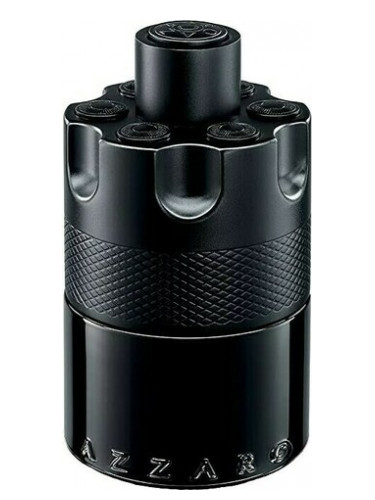
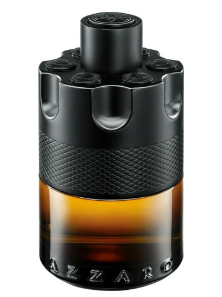
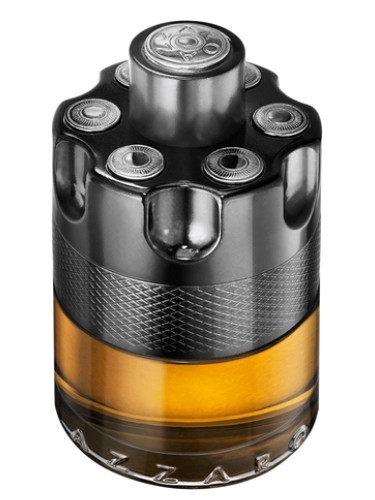
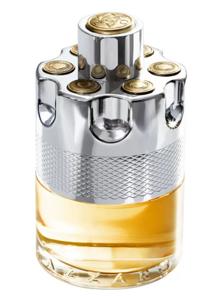
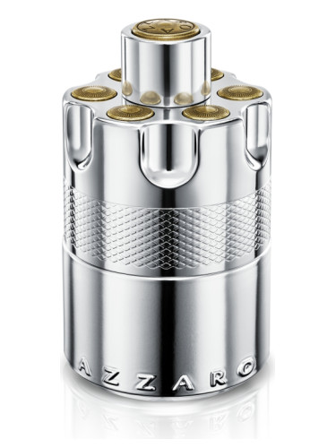
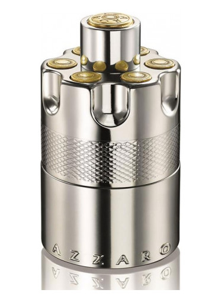
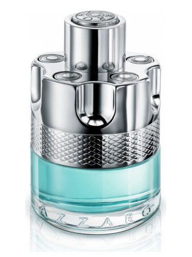

The Azzaro brand was created in the image of its founder, Loris Azzaro. A Tunisian-born Sicilian who embodied the essence of Mediterranean luxury—tanned, sensual, hedonistic—the designer quickly established a reputation in the late 1960s with his glamorous and sexy fashions. The brand expanded its offering to include fragrances, introducing Azzaro for Women in 1975, to be followed soon by the modern classic Azzaro pour Homme in 1978. From its inception, and continuing through its newest releases under current artistic director Vanessa Seward, Azzaro embodies a chic and jet-setting lifestyle synonymous with present-day luxury.
Country: France
Main Activity: Fashion
Some of their Fragrances
Wanted Collection






